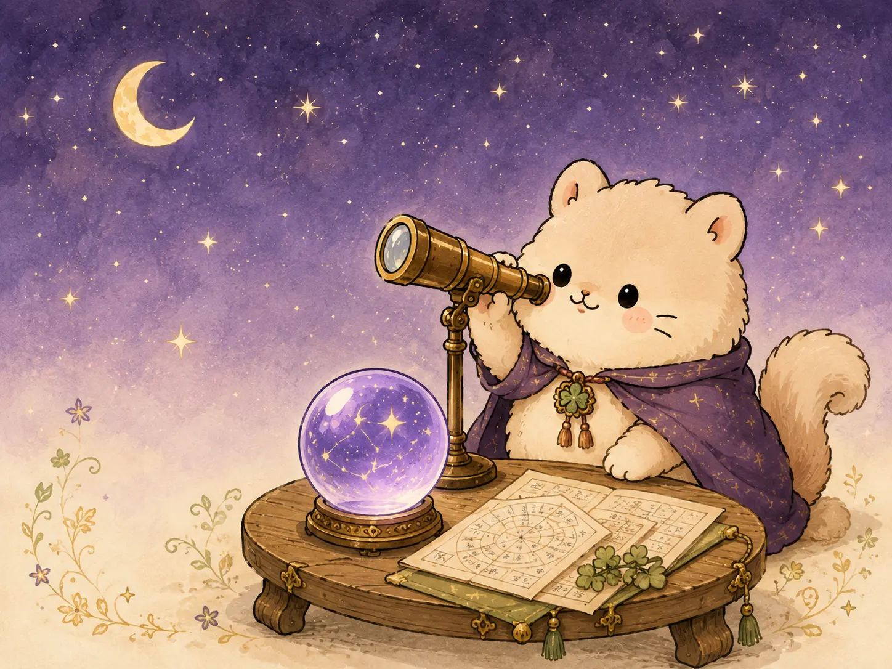
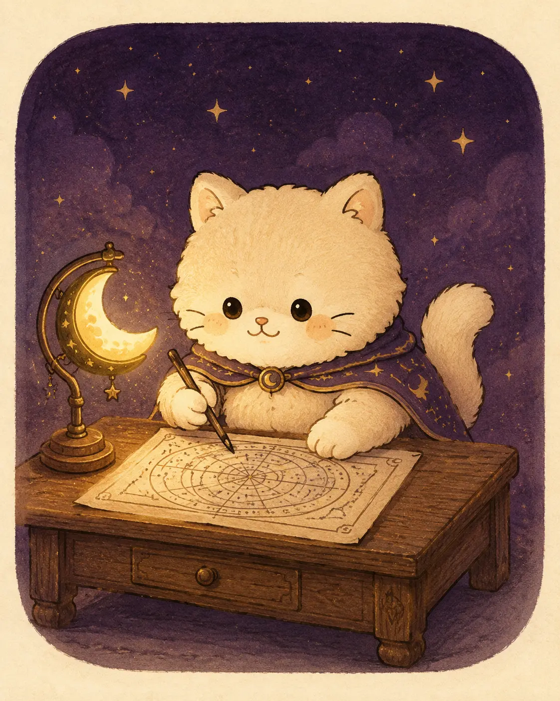

에 태어난 당신은
호기심 많은 초록별 고양이고양!
작은 변화도 빠르게 알아채고, 새로운 것을 자기 방식으로 익히는 힘이 있어요. 지금은 혼자 고민하기보다 사람을 통해 기회를 발견하기 좋은 흐름이에요.
오늘도 별을 살펴보는 중… ✦
어렵고 무거운 말 대신, 나의 성향과 지금의 흐름을
볼고양이 다정하고 쉽게 이야기해 줄게요.

서두르기보다 하나씩 끝내기 좋은 날이에요. 미뤄둔 연락부터 해볼고양?
● 행운색 연두 · 행운 숫자 3볼고양에게 알려주고양
작은 변화도 빠르게 알아채고, 새로운 것을 자기 방식으로 익히는 힘이 있어요. 지금은 혼자 고민하기보다 사람을 통해 기회를 발견하기 좋은 흐름이에요.
오늘은 어떤 게 궁금하냥
볼수록 나 같은 이야기
일간별 성격과 일상을 짧고 귀여운 공감툰으로 풀어볼고양.
인스타에서도 만날고양사주별 공감툰과 볼고양의 짧은 운세를 가장 먼저 받아보세요.
사주는 정답이 아니라 나를 이해하는 작은 힌트고양 ✦

대체 누구고양?
볼고양은 미래를 함부로 단정하지 않아요. 태어난 날의 기운을 통해 내가 가진 성향과 지금의 흐름을 가만히 관찰해 드려요.
“운세는 정답지가 아니라,내 운명 고양이 만나볼고양 →
나를 살펴보는 작은 망원경이고양.”